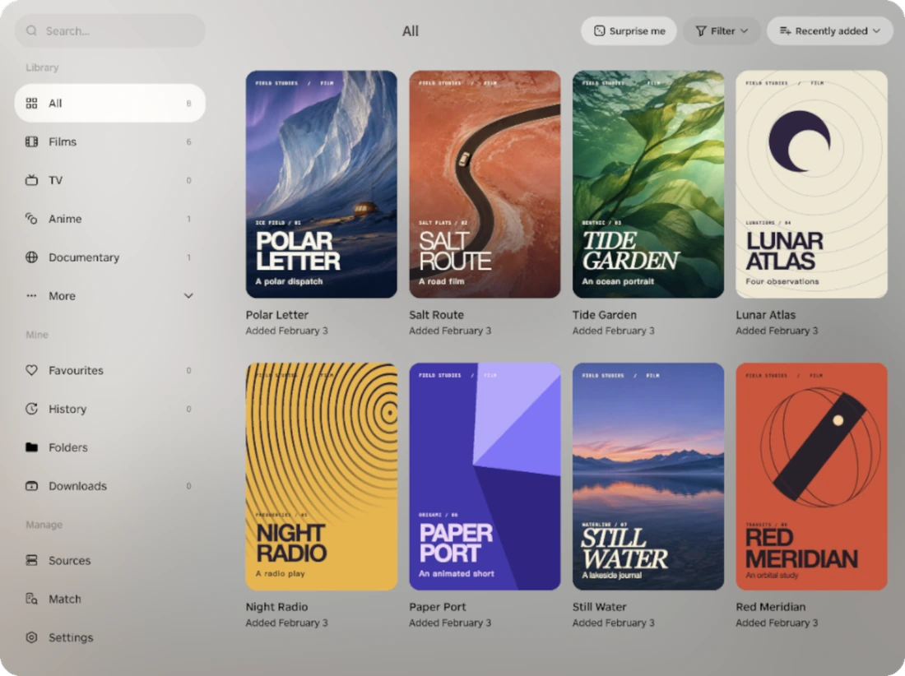
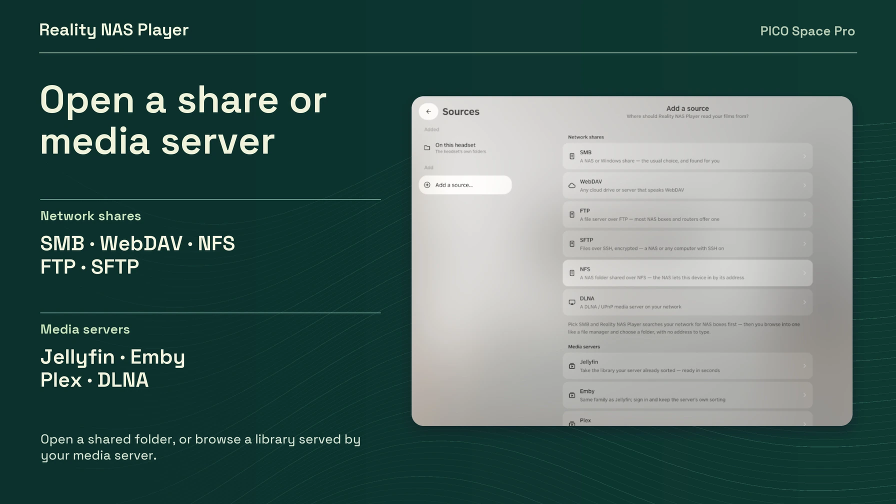
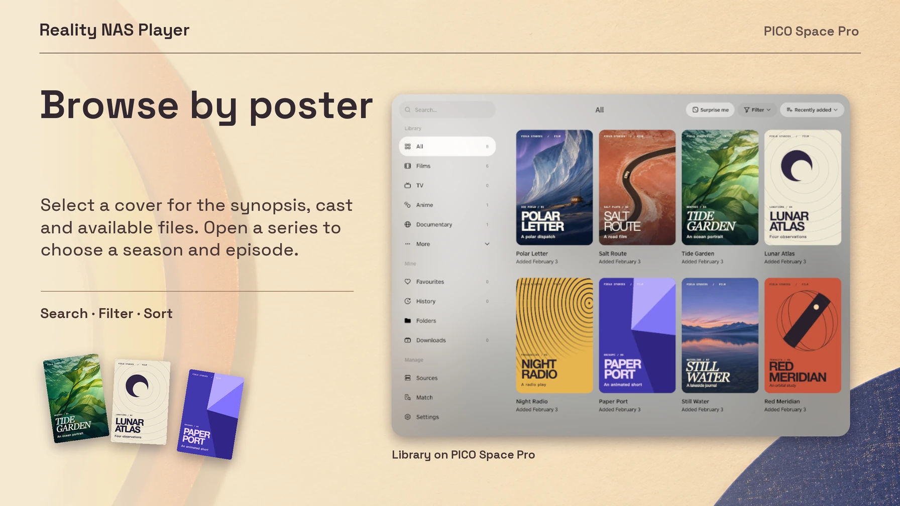
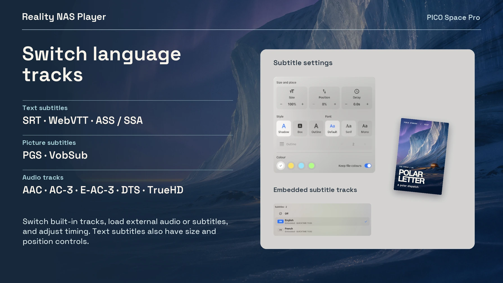
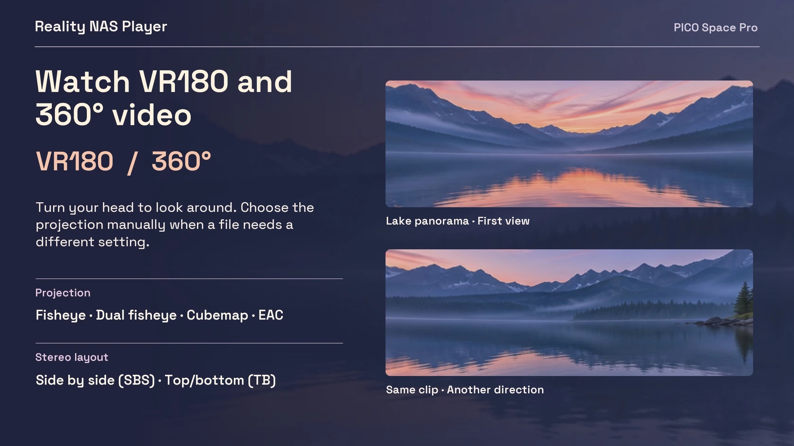

Movies
Use title and year to find the film on every.film or NeoDB without a database key. Wikidata and Open Film Database can help verify its identity.
Built for PICO Space Pro
Identify films, organise TV seasons, and match documentaries and anime. Pick a poster to see the cast, select an episode or play the file from your NAS.

A movie called video1.mkv can inherit its title and year from the folder above it. The scanner also reads Kodi NFO files, posters and backdrops beside the video. Manual corrections survive a rescan.
Polar Letter (2026)/
Polar.Letter.2026.mp4
movie.nfo
poster.jpg

Use title and year to find the film on every.film or NeoDB without a database key. Wikidata and Open Film Database can help verify its identity.
Read the series folder and season/episode markers such as S02E03. A local tvshow.nfo and episode NFOs can supply series and episode metadata.
Feature-length documentaries use film lookup. Episodic documentaries use programme folders, season and episode numbers, and local NFO metadata.
Match native, romanised and translated titles with AniList and Bangumi. A neighbouring fansub episode can supply the full name when a filename contains only an abbreviation.
In a published test on two NAS shares, the stable release identified 266 of 267 films, retrieved a poster for each match and left one unresolved. No wrong film matches were recorded. Test set and results
The v1.2.0-rc.1 preview adds keyless online series matching, broadcaster checks for documentary series and an offline multilingual anime index. Preview release
Choose a network share for folders and files, or connect to a library already indexed by your media server. A protected source uses its own login.

Search, filter or sort the covers. Open one to read the synopsis and cast, choose a version, or move through seasons and episodes. Resume from the saved playback position.

The library recognises 25 video file extensions and compatible unencrypted disc images. The codec, profile, resolution and headset decoder determine how a particular file plays.

Switch between an embedded soundtrack and an external dub. Select a subtitle track and adjust its timing. Text subtitles also have appearance controls for size and position.
Play the same film on a screen in each room. Space Lounge has five seats, including two window seats. Private Cinema and Village Square each offer three viewing positions.

Turn your head to look around a 360° recording. VR180 covers the hemisphere in front of you. The player reads projection metadata and lets you override the layout for a particular clip.

Install the signed v1.1.0 APK on PICO OS 6, then open a video or add a NAS under Sources.